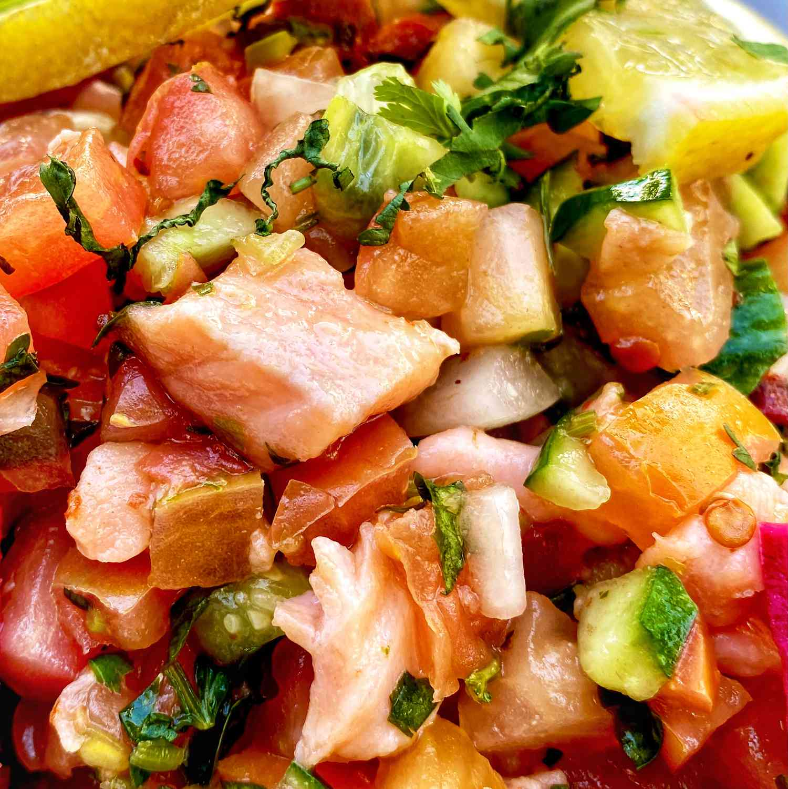

Thin slices of salmon lounge in a lime, garlic, and cilantro marinade for four hours before being served with chips, rice or tortillas. Fresh ingredients are what makes this simple, easy dish amazing. The hardest part of it is the slicing and dicing. With minimal effort and no cooking you'll get rave reviews. This can just as easily pass for an appetizer in smaller portions.

Ingredients
-
¼ teaspoon white sugar
-
½ teaspoon sea salt, or to taste
-
½ teaspoon chili paste or sauce
-
¼ cup fresh lime juice
-
¼ teaspoon fresh ground pepper
-
¼ teaspoon cumin
-
¼ cup extra virgin olive oil
-
1 clove garlic, minced
-
¼ cup minced red onion
-
1 ripe tomato, finely diced
-
2 tablespoons minced fresh cilantro
-
1 pound very fresh salmon fillets (sushi-grade preferred), thinly sliced
-
1 avocado, sliced
Directions
-
Dissolve sugar, salt, and chili paste in lime juice in a large glass or plastic bowl. Season with pepper and cumin. Stir in olive oil, garlic, onion, tomato, and cilantro. Gently mix in salmon; cover and refrigerate for 4 hours.
-
To serve, drain the excess liquid from the salmon, then gently stir in avocado slices. Allow to rest at room temperature for 15 minutes.
Return to Odin Recipes